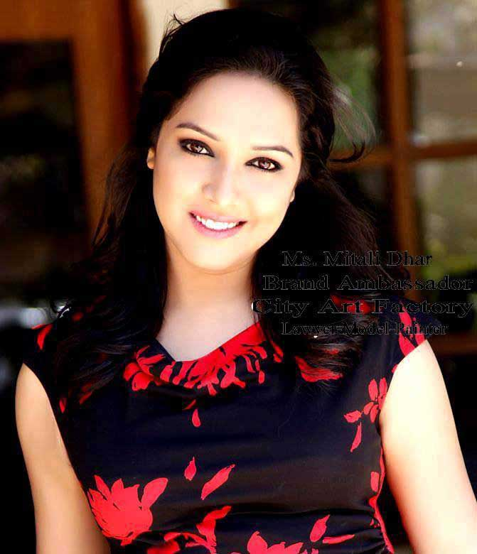

It all began in 2010…
The founder, Mr.Santanu Roy, hit upon the ‘City Art Factory’ (CAF) name in 2010. He took the word
‘…Art Factory’ due to immense number of proliferation of talent in his native place Kolkata and throughout the state called West Bengal.
Today, CAF speaks only about the honesty and integrity as it works as the two main values behind the organization. Art is a key element in one’s mental growth and development and creating art stimulates the imagination, the emergence of ideas and creative expression.
According to CAF, art must create a specific emotional connection between artist and audience, one that "infects" the viewer. Thus, real art requires the capacity to unite people via communication (clearness and genuineness are therefore crucial values). To CAF, art represents an aesthetic conception.
CAF perceives to create an unbised artworld . CAF is determined to offer an eligant platform where new generation will be able to exhibit their creation before the the maestros & living legends in the field of Painting & Sculpture in this art world and to promote their work through various channels along with constant exposure through, eligant exhibitions in star hotels and work shops.
CAF selects all upcoming artist’s creations both painting and sculpture by its own panel of judges to exhibit and market worldwide. Hence CAF is offering a huge platform to the upcoming artists. All founded on the same basic philosophy of learning and developing – through creation.
True to its motto, the CAF has emphasized the importance of high quality, ensuring that buyers, art lovers to buy beautiful, eye soothing creations from CAF again and again.
-
Santanu Roy
Designated Partner
Mr. Santanu Roy, founded ‘City Art Factory’ on 1st December 2010. Mr. Roy is an MBA from the ‘Institute of Business Management and Research’- Kolkata and studied Tourism Studies and has over 14 years of cross functional experience across industries. Before founding ‘City Art Factory’ he has worked in different functions across multiple industry sectors in India. Mr. Roy is responsible for the business development and management of the company as Designated Partner of ‘City Art Factory’.
-
Dr. Piyali Roy Sarkar
Designated Partner
Dr. Piyali Roy Sarkar has joined City Art Factory as another Designated Partner on 1st November 2016. Dr. Roy Sarkar graduated from University of Calcutta and Successfully completed DHMS from D.N.De Homeopathy Medical Collage from Kolkata. She has seventeen years of experience in the field of medical profession and practices in her private chamber.
-

Ms. Mitali Dhar
Brand Ambassador
Ms. Mitali Dhar has joined City Art factory as Brand Ambassador on 12th November 2015. She is a Bachelor of Laws (LLB) and has cross functional experience across industries. Moreover she took modeling as her career and worked as painter working in several metropolitan cities in India. We are delighted to get her graceful presence in City Art Factory.